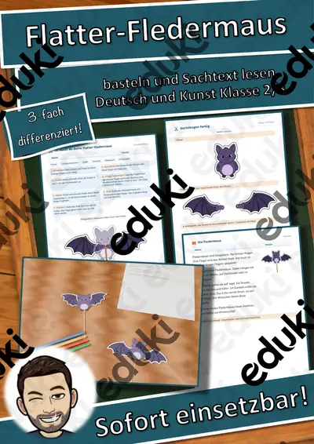
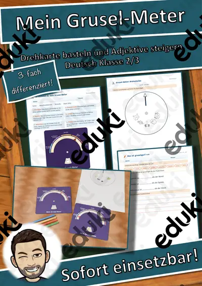
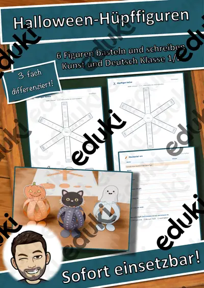
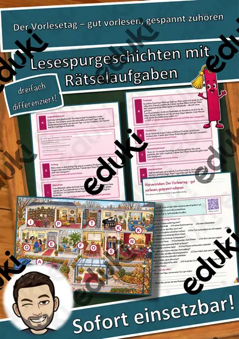
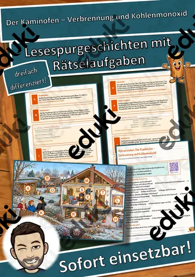
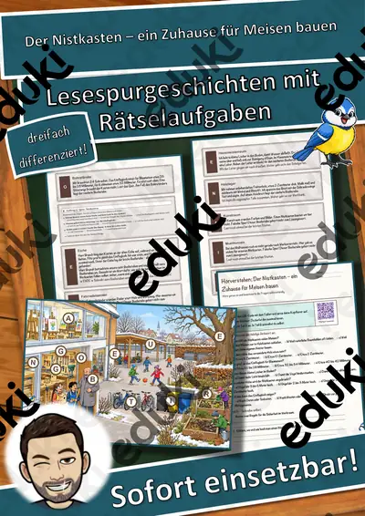
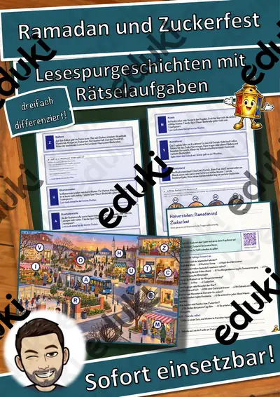
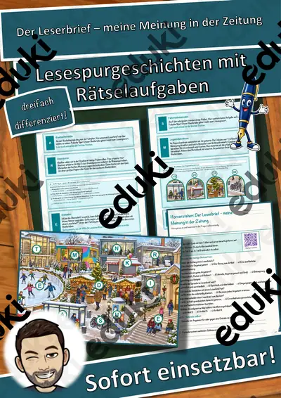
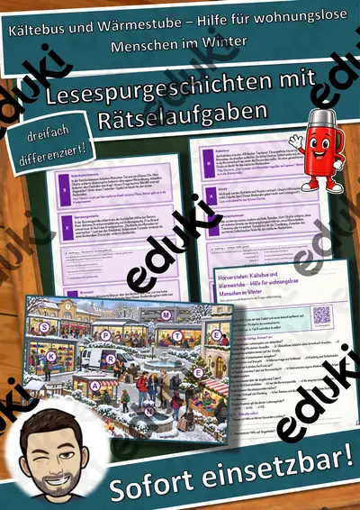
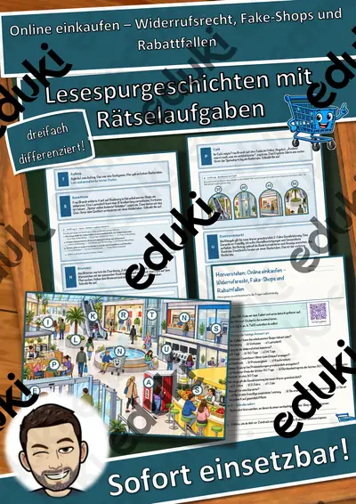

Lesespaziergang Nikolausabend: Stiefel, Sterne, Plätzchenduft – 8 Stationen in 3 Lesestufen mit Hörfassung (Klasse 1–2, DaZ)

Lesespaziergang Tiere im Winter: Pit, der Igel, sucht ein Bett – 8 Stationen in 3 Lesestufen mit Hörfassung (Klasse 1–2, DaZ)

Lesespaziergang Laternenzeit: Linas Laterne – 8 Stationen in 3 Lesestufen mit Hörfassung (Klasse 1–2, DaZ)

Materialpaket Advent und Winter für die 6. Klasse: 7 Lesespurgeschichten mit Rätselaufgaben (Weihnachtsbasar, Saturnalien, Lichterfeste & mehr)

St.-Martins-Laterne aus einem Blatt – falten, einschneiden, rollen, mit Martinsgeschichte, 3-fach differenziert (Klasse 2/3)

Herbst-Klappkarte Eichhörnchen – Figurenkarte basteln mit Sachtext, 3-fach differenziert (Tiere im Herbst, Klasse 2/3)

Flatter-Fledermaus am Stab – bewegliche Bastelfigur mit Sachtext, 3-fach differenziert (Halloween/Herbst, Klasse 2/3)

Halloween-Ziehkarten – Präpositionen sichtbar machen: über, vor, neben, auf, 3-fach differenziert (Klasse 1/2, DaZ)

Spinnen-Rätsel-Faltkarte – Halloween-Rätsel lesen und schreiben, Pop-up-Spinne, 3-fach differenziert (Klasse 2/3)

Mein Grusel-Meter – Halloween-Drehkarte basteln, Adjektive steigern und vergleichen, 3-fach differenziert (Klasse 2/3)

Halloween-Hüpffiguren – 6 Bastelvorlagen mit Federkugel, Steckbrief und Geschichte, 3-fach differenziert (Klasse 1/2)

Klapp-Spukhaus zu Halloween – Bastelvorlage mit Schreibanlass und Wortspeicher, 3-fach differenziert (Klasse 3/4)

Bohren an der Ständerbohrmaschine – sicher und genau – Lesespurgeschichte mit Rätselaufgaben (Klasse 7)

Umtausch nach Weihnachten – Gewährleistung, Garantie und Kulanz – Lesespurgeschichte mit Rätselaufgaben (Klasse 8)

Der Vorlesetag – gut vorlesen, gespannt zuhören – Lesespurgeschichte mit Rätselaufgaben (Klasse 6)

Der Kaminofen – Verbrennung und Kohlenmonoxid – Lesespurgeschichte mit Rätselaufgaben (Klasse 8)

Der Jahresrückblick – eine Radiosendung entsteht – Lesespurgeschichte mit Rätselaufgaben (Klasse 7)

Materialpaket Herbst-Lesespuren für die 3. Klasse: 7 Lesespurgeschichten mit Rätselaufgaben (Kürbis, Igel, Laterne, Halloween & mehr)

Der Nistkasten – ein Zuhause für Meisen bauen – Lesespurgeschichte mit Rätselaufgaben (Klasse 5)

Ramadan und Zuckerfest – Lesespurgeschichte mit Rätselaufgaben (Klasse 4)

Die Inventur – zählen, wiegen, vergleichen – Lesespurgeschichte mit Rätselaufgaben (Klasse 8)

Volksmusik in den Alpen – Jodeln, Hackbrett und Alphorn – Lesespurgeschichte mit Rätselaufgaben (Klasse 7)

Merkmale einer Kurzgeschichte – Lesespurgeschichte mit Rätselaufgaben (Klasse 7)

Paketflut im Advent – ein Tag im Paketzentrum – Lesespurgeschichte mit Rätselaufgaben (Klasse 8)

Der Leserbrief – meine Meinung in der Zeitung – Lesespurgeschichte mit Rätselaufgaben (Klasse 8)

Kältebus und Wärmestube – Hilfe für wohnungslose Menschen im Winter – Lesespurgeschichte mit Rätselaufgaben (Klasse 9)

Wichern und der Adventskranz – Hilfe für Kinder in Not – Lesespurgeschichte mit Rätselaufgaben (Klasse 7)

Der erste Ferienjob – Jugendarbeitsschutz, Minijob und Lohn – Lesespurgeschichte mit Rätselaufgaben (Klasse 9)

Elisabeth von Thüringen – Brot, Rosen, Nächstenliebe – Lesespurgeschichte mit Rätselaufgaben (Klasse 4)

Online einkaufen – Widerrufsrecht, Fake-Shops und Rabattfallen – Lesespurgeschichte mit Rätselaufgaben (Klasse 8)
Keine Materialien gefunden – versuch einen anderen Suchbegriff oder Filter.
Was im Deutschunterricht damit möglich ist
Lesen, Schreiben, Sprache untersuchen: Diese Bereiche tauchen in jedem Lehrplan auf, und die Materialien dieser Seite bedienen vor allem das Lesen mit Verständnis. Die Sachtexte sind sprachlich auf die Altersstufe abgestimmt, die Aufgaben prüfen, ob das Gelesene wirklich angekommen ist. Bei den Lückentexten kommt das Hören dazu, weil jeder Text auch als Audiodatei per QR-Code abrufbar ist.
Klasse 1 bis 4: Lesen in Bewegung und Basteln mit Text
In der Grundschule überwiegen Formate, die Kinder aus dem Sitzen holen. Ein Lesespaziergang wie „Lesespaziergang Laternenzeit: Linas Laterne“ oder „Lesespaziergang Nikolausabend: Stiefel, Sterne, Plätzchenduft“ schickt die Klasse im Rundlauf an Bildkarten vorbei, bis ein Lösungswort entsteht. Wer lieber schneidet und klebt, findet Bastelvorlagen mit Sachtext wie „Herbst-Klappkarte Eichhörnchen“ oder „Spinnen-Rätsel-Faltkarte“, bei denen das Lesen Teil der Bauanleitung ist. Für Schreibanlässe eignet sich „Gruselgeschichten schreiben: Schreibwerkstatt mit Hilfen“.
Klasse 5 und 6: Sachtexte als Lückentext
Der mit Abstand größte Block gehört zu den Klassen 5 und 6. Hier stehen Lückentexte zu Themen wie „Der Nistkasten“, „Vom Feld in den Laden“, „Essen verbindet“ und „Feste der Weltreligionen“. Auch „Der Vorlesetag“ und „Sagen“ gehören dazu, ebenso Werkstattthemen wie „Upcycling“. Sie funktionieren als Lesetraining, als Wortschatzarbeit oder als stille Beschäftigung.
Klasse 7 bis 10: Texte für das, was danach kommt
In den höheren Klassen wird es alltagsnah und berufsvorbereitend: „Die Bewerbung“, „Der Ausbildungsvertrag“ und „Der erste Ferienjob“ in Klasse 9, „Der Leserbrief“ und „Umtausch nach Weihnachten“ in Klasse 8, „Merkmale einer Kurzgeschichte“ in Klasse 7. In Klasse 10 setzen „Streaming und Urheberrecht“ und „Digitale Kunst“ Medienthemen auf die Tagesordnung.
Häufige Fragen
Wie unterscheiden sich Lesespaziergang und Lesespurgeschichte?
Der Lesespaziergang ist für Klasse 2 bis 4 gedacht und arbeitet mit Bildkarten im Rundlauf. Die Lesespurgeschichte erzählt eine Geschichte in Stationen und kommt in drei Niveaustufen für ältere Klassen.
Gibt es Material für Rechtschreibung und Grammatik?
Der Schwerpunkt liegt auf Leseverständnis, Wortschatz und Textarbeit. Einzelne Materialien, etwa Wortspeicher-Texte, trainieren Rechtschreibung nebenbei mit.
Kann ich die Texte in der Fördergruppe einsetzen?
Ja, die Hörfassung und der Wortspeicher machen die Lückentexte auch für Kinder mit Leseproblemen zugänglich.
Gibt es eine schwarz-weiße Druckfassung?
Bei den Lesespurgeschichten ist eine Schwarz-Weiß-Fassung enthalten. Welche Beigaben ein einzelnes Material hat, steht in seiner Beschreibung.